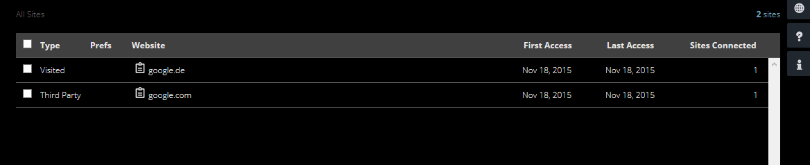

Webbasierte Anwendungen I
Datenschutz
19. November 2015
Studiengang Medieninformatik an der Technischen Hochschule Köln
Campus Gummersbach
Robin Mathesdorf und Krystian Schindler
Datenschutzgesetze I
Europäisches Datenschutzrecht
• Das aktuell geltende Datenschutzrecht stamm aus dem Jahr 1995
• Januar 2012: Erster Entwurf der Europäischen Datenschutz-Grundverordnung
• 2018: Die neue, fertige Datenschutzverordnung soll in Kraft treten
Datenschutzgesetze II
Deutsches Datenschutzrecht
• Februar 1977: Verabschiedung der ersten Datenschutzgesetze
• Das Gesetzesblatt umfasste nahezu 50 Paragraphen
• 2003: Erscheinung eines überarbeiteten Gesetzesblattes
Cookies I
Was sind "Cookies"?
• Ein Cookie ist eine Textdatei
• Speichert Benutzerdaten bei jedem Webseitenaufruf
• Vorteil: Login-Daten müssen nicht immer wieder eingegeben werden
• Ursprünglicher Nutzen: Zählen von Besuchern einer Webseite
• Heutiger Nutzen: Analyse der Surfer
• Lightbeam: AddOn von Firefox zur Ermittlung welche Webseiten Cookies benutzen
• Ebenfalls: Möglichkeit herauszufinden, welche Webseiten bei der Beschattung zusammenarbeiten
Lightbeam I

Der runde Kreis symbolisiert die Webseite, die wir besucht haben. Das dreieckige Symbol hingegen, welche Webseite oder Server "irgendwie" mit unserer Webseite verbunden ist. Ist eine Verbindung (die mit einer Linie gekennzeichnet ist) lila, werden zwischen den Webseiten/Servern Cookies ausgetauscht. Ist diese hingegen weiß, sind die Webseiten/Server miteinander verbunden, haben aber zum aktuellen Zeitpunkt (noch) keine Daten ausgetauscht.
Lightbeam II
Eine andere Möglichkeit die Zusammenhänge der Webseiten/Server anzeigen zu lassen. Statt einem Graphen finden wir hier eine Liste vor. "Visited" zeigt die besuchte/n Seite/n, "Third Party" die Drittanbieter bzw. die verbunden Webseiten. Zudem werden hier weitere Informationen wie z.B. an welchem Tag wir die Webseite besucht haben.
Lightbeam III
Lightbeam IV
Erklärung der vorherigen Folie:
Es gibt die Möglichkeit, sich weitere Infos anzeigen zu lassen. Wenn das Lightbeam-AddOn aufgerufen wird, gibt es oben rechts ein "Weltkugelsymbol". Damit werden weitere Infos aufgerufen. Darin sind zusätzliche Informationen zu finden. Wir können eine Webseite oder einen Server blockieren, womit uns der Zugang verwehrt wird. Im Gegenzug dazu ist es diesem Server nicht möglich auf unseren Computer zuzugreifen. Ebenso wird der Standort der besuchten Webseite angezeigt, sowie aufgelistete Verbindungen.
Lightbeam V
Dieser Graph hingegen zeigt uns die Verbindungen der Seite "Youtube.com" an. Hier sehen wir, dass diese Webseite mit "Google.com" automatisch verbunden ist und Daten austauscht. Zudem werden noch zwei weitere Server angezeigt, die aber auf dieser Folie keine wichtige Rolle einnehmen.
Lightbeam VI
Dieser Graph enstand ein bisschen komplizierter. Man öffnete zuerst die Seite "Google.de" und gab bei den Suchanfragen "Youtube.com" ein. Daraufhin wurde die Seite "Yotube.com" aufgerufen. Somit wurden über "Google.de" Daten zu "Youtube.com" übertragen. Da, wie man aus den vorherigen Folien entnehmen kann, die Webseite "Youtube.com" automatisch Daten an "Google.com" sendet, entsteht somit das dreieckige Symbol mit dem "G" darin, was für die Webseite "Google.com" steht. Ist ein Server oder eine Webseite blockiert, so wird das Symbol pink ausgefüllt. Bei dem oberen Beispiel ist es der Server "ytimg" den wir blockiert haben.
Lightbeam VII

Zur besseren Veranschaulichung wird hier die aufgelistete Variante gezeigt.
Cookies II
Google Analytics I
• Im deutschsprachigem Raum meistgenutztes Web-Analysewerkzeug
• Wird von Google kostenlos angeboten
• Dient zur Analyse von Benutzerprofilen
ACHTUNG: Bei herkömmlichen Analysetools bleiben die Daten auf dem eigenen Server, bei Google Analytics hingegen werden sämtliche Daten von Google gespeichert und für eigene Zwecke benutzt
Cookies III
Google Analytics II
Aufgabe 1:
Was glauben Sie welche Daten Google-Analytics speichert?
Cookies IV
Aufgabe 1 Lösung
• Herkunft (Land und Stadt)
• Sprache
• Betriebssystem
• Gerät (PC, Tablet-PC, oder Smartphone)
• Browser und alle verwendeten Add-Ons
• Auflösung des Computers
Cookies V
Aufgabe 1 Lösung
• Besucherquellen (Facebook, Suchmaschine oder verweisende Webseite
• Welche Daten wurden heruntergeladen?
• Welche Videos wurden angeschaut?
• Welche Werbebanner wurden angeklickt?
• Ging der Besucher danach auf eine interne oder externe Webseite?
• Wie lange blieb der Besucher?
Cookies VI
Supercookies
• Supercookies sind viel größer als einfache Cookies
• Sie lassen sich auf bis zu zehn verschiedenen Orten gleichzeitig abspeichern
• Löschung oder Blockieren der Supercookies nur möglich, wenn wirklich alle gelöscht/blockiert wurden
• Ein Cookie kann gelöschte Cookies reaktivieren
• In Amerika wurden bereits "ewige Supercookies" entwickelt, die sich unmöglich abschalten lassen
Cookies VII
Cookie-Hinweise I
• Firmen, die Google für professionelle Werbekampagnen nutzen werden gezwungen Informationen über eingesetzte Cookies preiszugeben
• Ausgeschlossen sind Kunden, die Google Analytics nutzen
• Da Cookies nicht zur vollen Funktionalität der Webseite benötigt werden, müssen Nutzer mit dem Einsatzvon Cookies einverstanden sein
• In Deutschland dürfen Cookies nur verwendet werden, solange der Nutzer dem nicht widerspricht
• Deshalb bezieht sich Google auf die EU-Richtlinien, statt auf Nationale
Cookies VIII
Cookie Hinweise II
• In Deutschland gibt es zwei gängige Methoden, Cookie-Hinweise anzeigen zu lassen
• Einzel-Opt-Out: Cookies können einzeln in den Einstellungen deaktiviert werden
• Gesamt-Opt-Out: Es können mit einem "Schalter" in den Einstellungen alle Cookies gleichzeitig deaktiviert werden
Datenschutz und Datenverkauf I
Datenschutz in bestimmten Arbeitsbereichen
Aufgabe 2:
Recherchieren Sie in Gruppen die Datenschutzrichtlinien in bestimmten Arbeitsbereichen. Jeder Gruppe wird ein Bereich zugeteilt
• Polizei
• Sozialamt
• Gesundheitswesen
• Arbeitgeber
Datenschutz und Datenverkauf II
Datenverkauf (Einwohnermeldeamt)
• Bei berechtigtem Interesse darf das Einwohnermeldeamt Daten weitergeben (z. B. Eintreibung von Schulden)
• Es dürfen nur bestimmte Daten weitergegeben werden (Vor- und Nachname, Anschrift, Doktortitel)
• Das Einwohnermeldeamt bekommt pro "weitergegebenem" Datensatz fünf bis 15 Euro
• Bei besonders vielen Datensätzen wird Rabatt gewährt
• Ich als Person darf dem Einwohnermeldeamt ein Verbot zur Weitergabe erteilen
• Falls eine Firma nachfragt, ob Ihre Daten aktuell sind, darf das Einwohnermeldeamt diese Information trotz Verbots erteilen
Datenschutz und Datenverkauf III
Datenhandel
• Als "Direktmarketing" wird die Möglichkeit bezeichnet, eine Zielgruppe direkt anzusprechen
• Je mehr Daten die Firmen über ihre Kunden haben, desto gezielter können Kunden angesprochen werden
• Laut einer Studie der Deutschen Post gaben Firmen im vergangenem Jahr 9,5 Milliarden Euro für volladressierte Werbung aus
• Unseriöse Firmen erschleichen sich meist Daten durch eine Unterschrift
• Daher sollten bei jeder Art von Vertrag die Datenschutzbestimmungen auf "Weitergabe an Dritte" überprüft werden
Rechtsfälle Datenschutz
Aufgaben zu Rechtsfällen
Aufgabe 3: